Golang基础
Slice
1. 组成
slice主要由三部分组成
2. 声明
1️⃣ 字面量：var ints [ ]int
变量ints就要存在一段连续的内存中，实际上就是个数组，data就是这个底层数组的起始地址， 但是目前只分配了这个切片结构，还没有分配底层数组
2️⃣ make： var ints [ ]int = make ( [ ]int,2,5 )
使用make后会不仅会分配这三个结构，还会开辟的一段内存，作为它的底层数组，这里make会为ints开辟一段可容纳5个整型元素的内存，还会把它们初始化为整形的默认值0
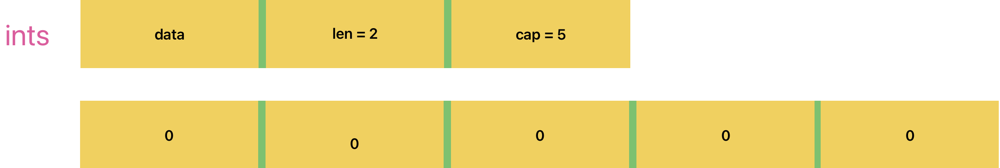
追加一个元素，append (ints, 1)
已经有了两个元素，在后面添加一个，长度变为3
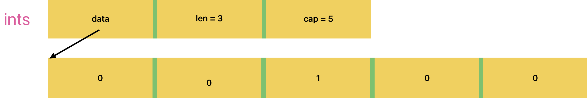
修改一个元素 ints[1] = 2
修改后元素变为1，但是不能修改超过数组长度的，比如int[4],就会发生越界访问，会发生panic

3️⃣ new ： ps:=new ( []string )
只分配三个结构，data=nil,len=0,cap=0,不负责分配底层数组，new的返回值就是slice结构的起始地址, (*ps)[0]=“aa”,这样的操作是不被允许的
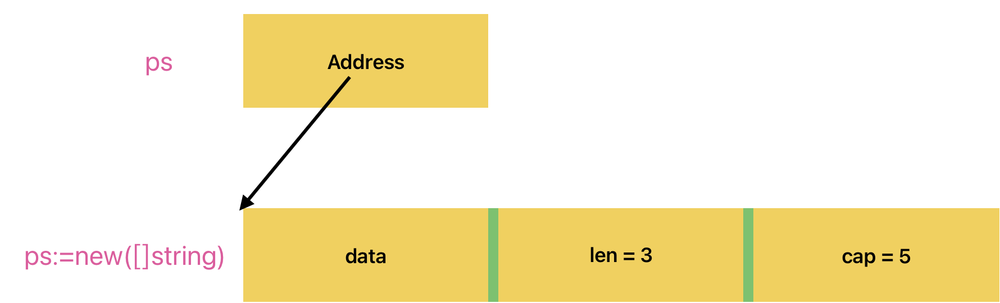
添加元素 : *ps = append ( *ps , “abc”)
append会分配底层数组
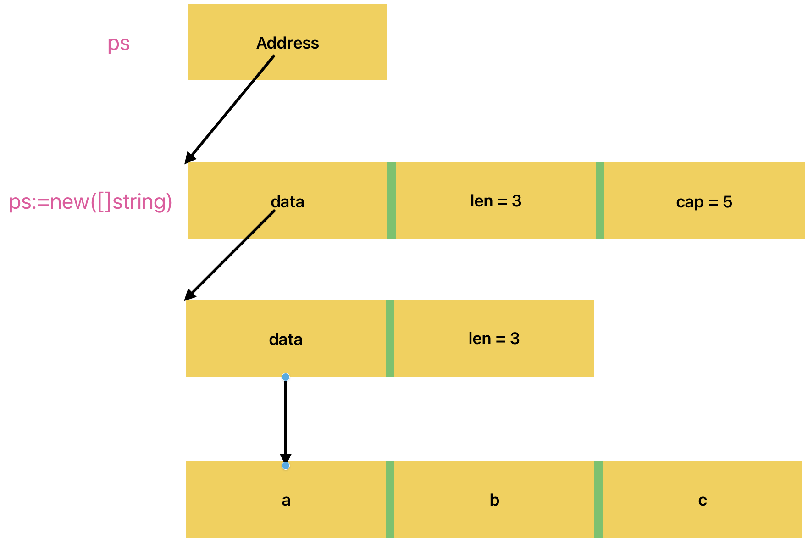
3. slice与array
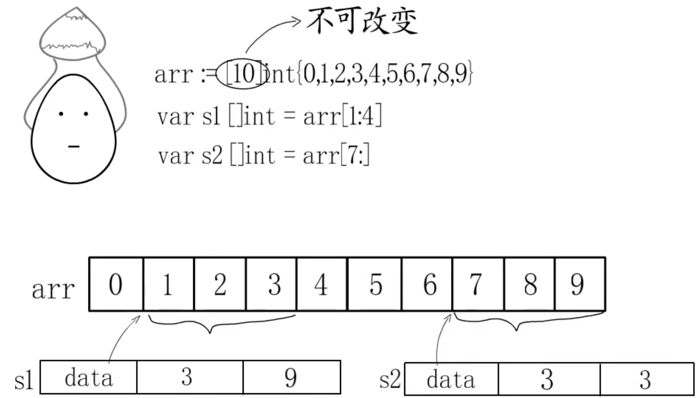
append: 分别追加
s2扩容超过原数组长度，需要新建数组，并扩容
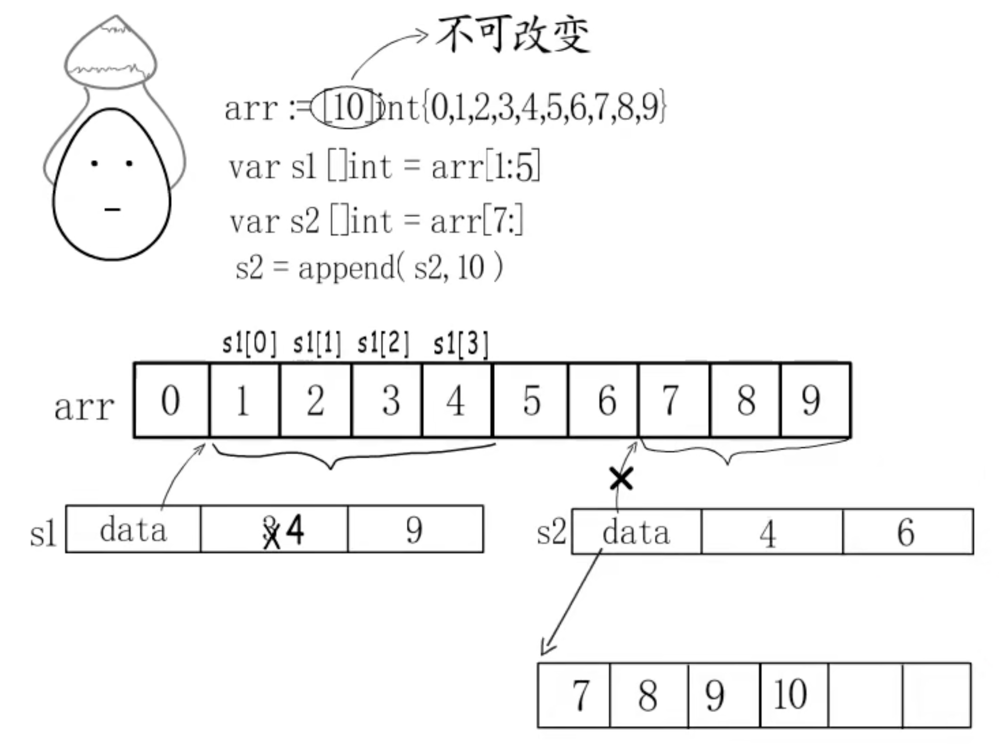
4. 扩容规则
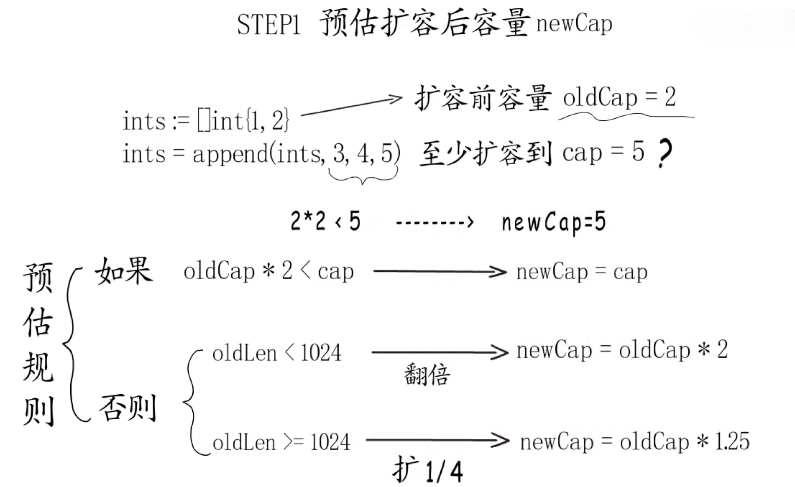
64位下，每个元素占16个字节
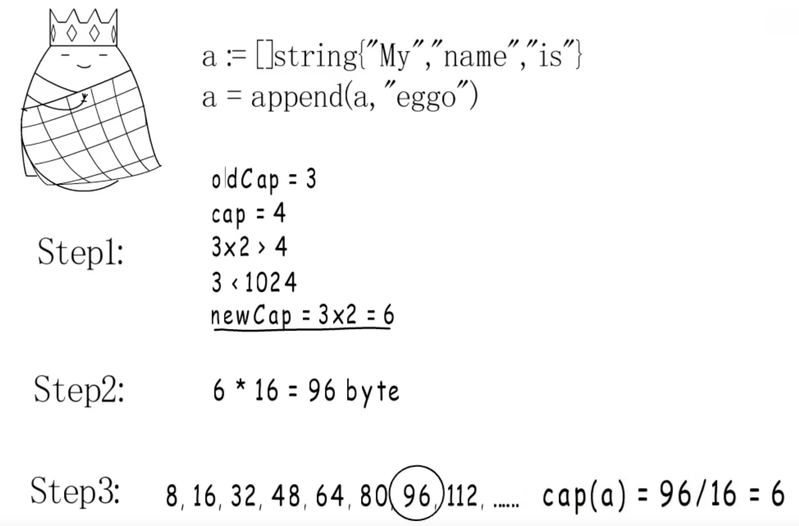
Golang原理
GMP
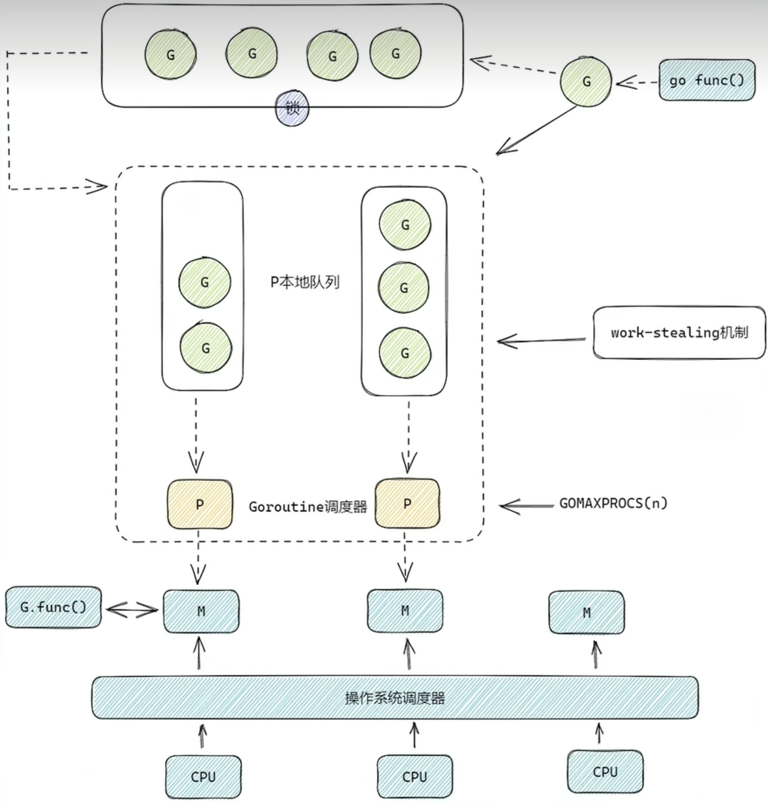
组件介绍：
- G（Goroutine）：代表 Go 协程，是轻量级的用户态线程。与传统线程相比，Goroutine 的创建和销毁开销极小，并且上下文切换也非常快速。一个 Go 程序中可以创建成千上万个 Goroutine。
- M（Machine）：代表操作系统线程，每个 M 都对应一个内核线程。M 负责执行 Goroutine，它是真正在操作系统上运行的实体。
- P（Processor）：代表处理器，它是连接 G 和 M 的桥梁。P 维护着一个本地的 Goroutine 队列，同时也可以从全局 Goroutine 队列中获取 Goroutine。每个 M 在运行时都需要绑定一个 P，才能执行 Goroutine。
- GOMAXPROCS(n) : 在程序中经常设置的进程数其实就是设置的GOMAXPROCS(n),它指定了调度器的个数
工作原理：
- 创建 Goroutine：当在 Go 程序中使用
go关键字创建一个新的 Goroutine 时，这个 Goroutine 会被放入当前 P 的本地队列中。如果本地队列已满，Goroutine 会被放入全局队列中。 - M 执行 Goroutine：每个 M 会绑定一个 P，然后从 P 的本地队列中获取 Goroutine 来执行。如果本地队列为空，M 会从全局队列中获取一批 Goroutine 到本地队列中。如果全局队列也为空，M 会尝试从其他 P 的本地队列中 “偷取” 一半的 Goroutine 到自己的本地队列中，这种机制称为 “工作窃取” work-stealing。
- 上下文切换：当一个 Goroutine 遇到阻塞操作（如 IO 操作）时，M 会将当前 Goroutine 挂起，然后从 P 的本地队列中获取另一个 Goroutine 继续执行。当阻塞操作完成后，挂起的 Goroutine 会被重新放入 P 的本地队列中等待执行。
GC三色标记
Golang启动时发生了什么？
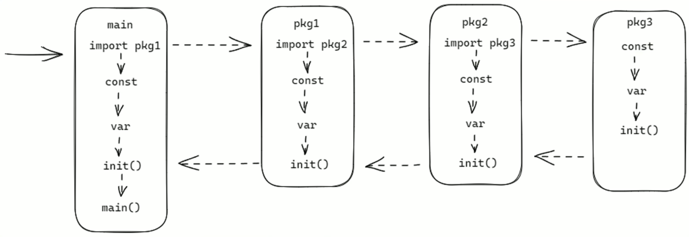
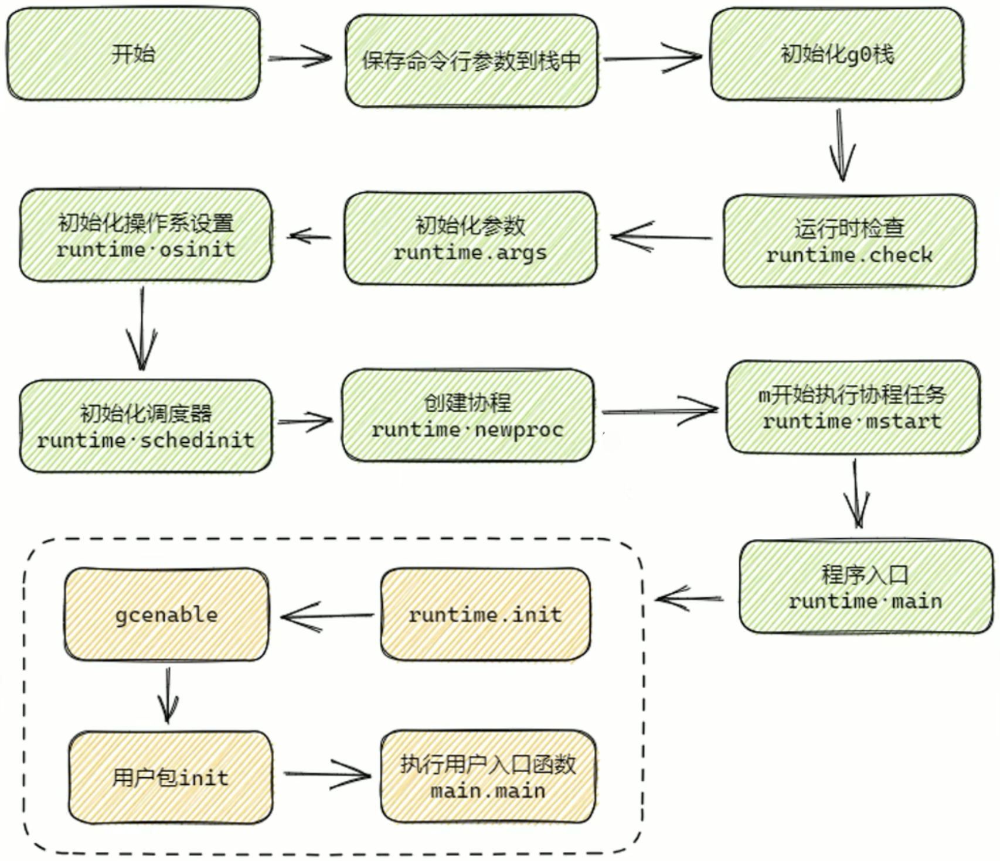
- 开始：程序启动的起始点。
- 保存命令行参数到栈中：将程序启动时传入的命令行参数存储到栈空间 ，方便后续使用，为后续初始化等操作提供参数依据。
- 初始化 g0 栈：g0 栈是 Go 语言运行时用于调度器自身执行的栈 。初始化 g0 栈为调度器的运行准备好栈空间，后续调度相关操作都基于此栈进行。
- 运行时检查（runtime.check）：对程序运行时的一些基础环境和类型信息进行检查，比如检查不同类型在当前系统架构下的大小是否符合预期等，确保运行环境正常。
- 初始化参数（runtime.args）：对程序启动相关的参数进行初始化设置，处理命令行参数、环境变量等相关信息，为后续程序运行提供基础参数配置。
- 初始化操作系统设置（runtime.osinit）：根据不同的操作系统进行相应初始化 ，如设置 CPU 个数、内存页大小等底层系统相关的配置，适配运行的操作系统环境。
- 初始化调度器（runtime.schedinit）：初始化 Go 语言的调度器 ，设置调度器相关参数和数据结构，为 Goroutine 的调度做好准备，如创建和初始化与调度相关的队列、设置 P（处理器）的相关信息等。
- 创建协程（runtime.newproc）：创建一个新的 Goroutine ，用于执行程序的主要逻辑，一般会将用户编写的
main.main函数作为该 Goroutine 的执行体。 - m 开始执行协程任务（runtime.mstart）：m 代表系统线程 ，此步骤让系统线程开始执行调度器分配的 Goroutine 任务，真正启动协程的执行。
- 程序入口（runtime.main）：Go 程序运行时的入口函数 ，在这个函数中会进行一系列关键初始化，如启动垃圾回收器、执行包的
init函数等。 - runtime.init：执行 Go 语言运行时自身相关的初始化操作 ，涉及运行时内部一些全局变量、数据结构的初始化等。
- gcenable：开启垃圾回收器 ，让垃圾回收机制开始工作，自动回收不再使用的内存，保障程序内存使用的有效性和稳定性。
- 用户包 init：依次执行用户代码中各个包的
init函数 ，用于完成用户自定义的初始化逻辑，比如初始化数据库连接、注册自定义函数等。 - 执行用户入口函数 main.main：执行用户编写的主函数 ，这是程序业务逻辑的起始点，程序真正开始执行开发者定义的功能代码。
内存逃逸
1. 定义
在 Go 语言中，内存分配有栈分配和堆分配两种方式。栈分配由编译器自动管理，函数调用时为局部变量分配内存，函数返回时自动释放；堆分配通过new或make函数动态分配内存，由垃圾回收器（GC）回收 。内存逃逸是指原本应在栈上分配的变量，因某些原因被分配到了堆上，即使函数返回后，这部分内存也不会自动释放，需等待 GC 回收。
2. 发生原因
-
变量生命周期超出作用域：当函数内部变量被函数外部引用，如赋值给包级变量、作为函数返回值时，其生命周期延长，编译器为保证内存安全，将变量分配到堆上。例如：
func escape() *int { num := 10 return &num // num 逃逸到堆上，因为返回后其地址仍被外部引用 } -
栈空间不足：若变量较大，栈空间无法容纳，会逃逸到堆上。比如大数组、大结构体等。
-
编译时无法确定类型或大小
-
切片扩展：对切片进行
append操作时，若不确定其最终大小，可能引发内存逃逸。因为可能需重新分配更大内存空间，且新空间可能在堆上。例如：func sliceEscape() []int { var sl []int for i := 0; i < 1000; i++ { sl = append(sl, i) // 随着元素增加，可能因空间不足导致内存逃逸 } return sl }
-
-
接口动态分配：具体类型变量赋值给接口类型时，因接口动态特性，具体值可能逃逸。例如：
type Dog struct{} func bark() interface{} { d := Dog{} return d // Dog 类型的 d 逃逸到堆上 } -
闭包引用：函数返回闭包且闭包引用了函数局部变量时，这些变量逃逸到堆上，以保证闭包后续调用时变量仍有效。例如
func closureEscape() func() { num := 5 return func() { println(num) // num 逃逸到堆上，因为闭包引用了它 } }
3. 影响
- 增加垃圾回收压力：堆内存需 GC 回收，逃逸变量多会使堆内存分配频繁，GC 扫描回收负担加重，尤其高频调用函数中，可能延长 GC 停顿时间，影响程序响应速度和吞吐量。
- 降低性能：堆分配比栈分配更耗时，涉及更多 CPU 和内存资源，频繁内存逃逸会使程序运行速度变慢。
- 减少缓存局部性：栈变量连续分配销毁，利于利用 CPU 缓存；堆上数据分散，导致缓存效率降低，增加内存访问延迟。
- 增加内存泄漏风险：若对象不再使用但仍被引用（如闭包、全局变量引用），因内存逃逸未及时回收，可能引发内存泄漏。
4. 检测方法
在编译时使用go build -gcflags "-m"命令，编译器会输出内存逃逸信息，显示哪些变量发生逃逸及原因。例如：
package main
func main() {
escape()
}
func escape() *int {
num := 10
return &num
}
执行go build -gcflags "-m" main.go，会看到类似main.escape: can inline和main.escape: &num escapes to heap的输出，表明num发生了内存逃逸。
5. 避免和优化措施
- 合理使用局部变量：将变量作用域限制在函数内部，避免外部引用，减少逃逸可能。
- 选择合适传递方式：大结构体、数组等用指针传递，避免数据复制；小结构体、基本类型用值传递，减少指针开销。
- 减少不必要堆分配：复用对象或使用对象池，降低堆内存分配频率。
- 优化数据结构：避免过度复杂数据结构和指针引用，减少编译时不确定性。